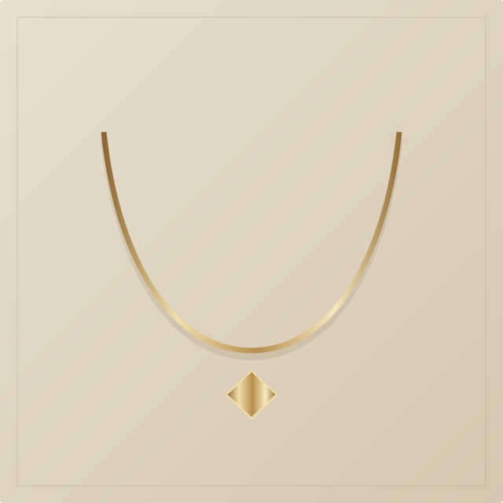

L’ESSENTIEL, TOUT EN ÉCLAT
Le charme des
belles matières.
Une boutique en préparation autour de bijoux dorés et argentés, aux lignes simples et à l’éclat discret. Chaque référence sera publiée après vérification de sa composition, de son prix et de sa livraison en France.
Voir l’aperçu OUVERTURE PROCHAINE

ILLUSTRATION DE MAQUETTE · MODÈLE À CONFIRMERBIJOUX DE TOUS LES JOURS
Une pièce pour chaque envie.
Ces fiches montrent la future organisation de la boutique. Les illustrations sont des dessins temporaires, pas des photos des produits à vendre.
12 bijoux dans la sélection
Sélection en préparation. Aucun prix, avis ou stock n’est inventé. Les articles ne sont pas commandables tant que fournisseur, expédition, photos autorisées et paiement ne sont pas configurés.
L’ESPRIT LUEUR
Des lignes justes.
Un éclat discret.
Une vitrine aux teintes profondes de vert, de champagne et d’ivoire. Les pages produits sont prêtes à recevoir des informations et des photos autorisées une fois les références fournisseurs vérifiées.